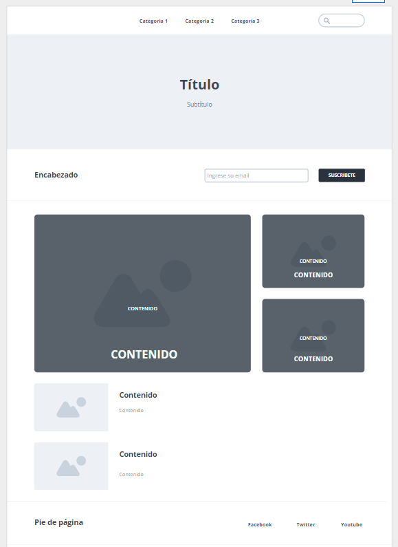

Veremos todo lo relacionado en cuanto a contenidos informativos respecto a estructura básica de html5
Aprender sobre las etiquetas básicas de html5
Desarrollar un diseño basico de pagina web usando etiquetas basicas de html5
Aprender los valores de html5
Diseñar maquetacion de una pagina web
Aprender sobre los atributos de html5
Etiquetas de html5:
Video sobre conocimiento de etiquetas en html5
Video sobre etiquetas básicas en html5
Video recuperado de Youtube
Video recuperado de Youtube
Atributos html5:
Video sobre algunos atributos en html5 primera parte
Video sobre algunos atributos en html5 segunda parte
Video recuperado de Youtube
Video recuperado de Youtube
Valores html5:
Video sobre de html5
Video recuperado de Youtube
Material de lectura:
Material de lectura sobre html5
Material de lectura recuperado de
guia completa Etiquetas, Atributos y Elementos
www.arkaitzgarro.comSobre html5
HTML5 es un lenguaje markup (de hecho, las siglas de HTML significan Hyper Text Markup Language) usado para estructurar y presentar el contenido para la web. Es uno de los aspectos fundamentales para el funcionamiento de los sitios, pero no es el primero. Es de hecho la quinta revisión del estándar que fue creado en 1990. A fines del año pasado, la W3C la recomendó para transformarse en el estándar a ser usado en el desarrollo de proyectos venideros. Por así decirlo, qué es HTML5 está relacionado también con la entrada en decadencia del viejo estándar HTML 4, que se combinaba con otros lenguajes para producir los sitios que podemos ver hoy en día. Con HTML5, tenemos otras posibilidades para explotar usando menos recursos. Con HTML5, también entra en desuso el formato XHTML, dado que ya no sería necesaria su implementación
Etiquetas
Una etiqueta (términos a veces reemplazados por el anglicismo tag) es una marca con clase que delimita una región en los lenguajes basados en XML. También puede referirse a un conjunto de juegos informáticos interactivos que se añade a un elemento de los datos para identificarlo (Oxford English Dictionary). Esto ocurre, por ejemplo, en los archivos MP3 que guardan información sobre una canción así como sobre el artista que la ha cantado o compuesto.
Atributos
Los atributos de HTML son palabras especiales utilizadas dentro de la etiqueta de apertura, para controlar el comportamiento del elemento. Los atributos de HTML son un modificador de un tipo de elemento de HTML. Un atributo tampoco modifica la funcionalidad por defecto de un tipo de elemento o proporciona funcionalidad a ciertos tipos de elementos incapaces de funcionar correctamente sin ellos. En sintaxis HTML, un atributo se añade a una etiqueta de inicio de HTML.
Valores
Son las propiedades que se le pueden asignar a los elementos. Por ejemplo, a html se le puede asignar un atributo para indicar en qué idioma está escrito el documento (lang) y podemos asignarle como valor un código de idioma ("es" para el español, "en" para el ingles...)
